Vamos a realizar escaneos mucho más avanzados que nos permiten descubrir una gama muchísimo más amplia de vulnerabilidades en un sistema.
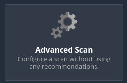
Aquí podemos configurar todo manualmente
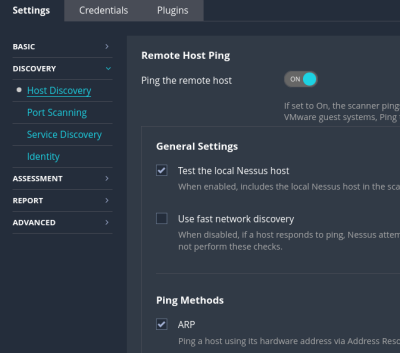
Si queremos realizar fuerza bruta, siempre y cuando estemos proporcionando los credenciales.
Las aplicaciones web que está sirviendo a ese host.
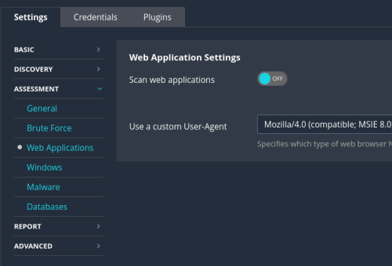
Esto tiene que ver un poco con el timeout para no sobrecargar la red, pues tratar de que nos escaneé en muchos host a la vez, etc
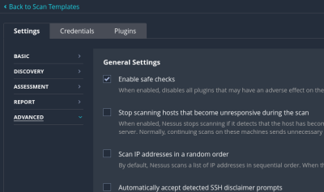
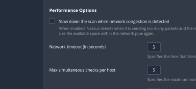
Donde de verdad cambia este escaneo avanzado es en los plugins que utiliza.
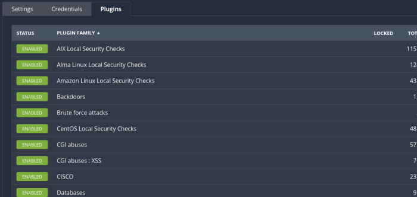
Por defecto el escaneo avanzado va a utilizar todos los plugins que se encuentran disponibles.
Podríamos seleccionar manualmente aquellos que queremos que estén activos o que no lo estén.
El escaneo avanzado es probablemente una de las cosas más útiles que tienen nessus, porque nos permite testear de manera muy rápida un conjunto de vulnerabilidades enorme.
Por otro lado, tenéis que tener en cuenta que es muy intrusivo porque estamos testeando muchísimas vulnerabilidades.
En la zona de la izquierda encontramos el apartado policies.
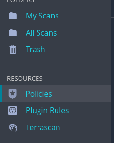
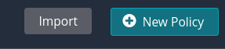
¿En qué consiste la creación de políticas?
Podemos pulsar en escaneo avanzado y configurar una política que va a consistir en un escaneo con todas las opciones que hemos personalizado en este escaneo avanzado.
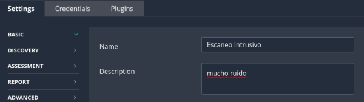
Podemos dejar todos los plugins activados.
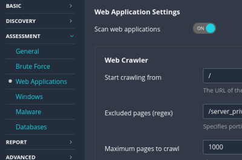
Desactivamos los safe checks.
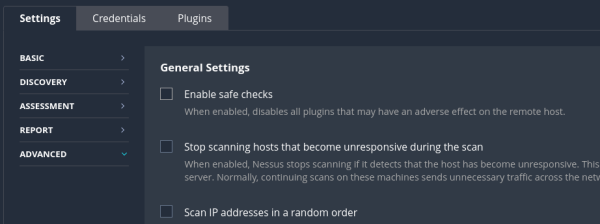
Previene que en el nessus realice algunos escaneos de vulnerabilidades que son muy intrusivos y que pueden afectar de alguna manera a romper el objetivo.
Para seleccionar esta política creamos un nuevo escaneo y lo seleccionamos.
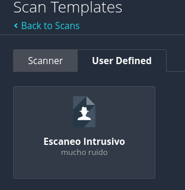
Podemos crear por ejemplo una plolítica que solo analice vulnerabilidades en puertos TCP y que además vaya actualizando los plugins de forma automática si se añaden nuevos para este servicio.
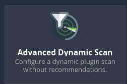
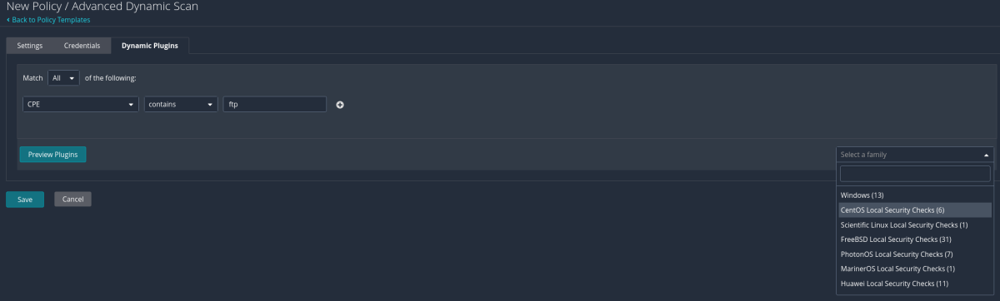
Podemos ir añadiendo reglas.